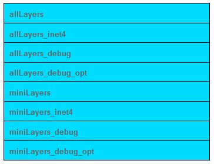
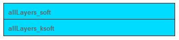

Build Warning Guidelines for VxWorks 7¶
This document provides guidelines and information on build warnings for VxWorks 7. A nightly build warning report is generated from the VxWorks 7 integration branch and send out to development teams to review and analyze. The guideline on VxWorks 7 is to ensure there are “0” warnings within VxWorks code (3rd party code are excluded) when certain configurations are compiled with the indicated warnings flags.
Report & owners of build warning¶
Daily report will be generated based on build tests of nightly test.
Build warning owners are generated based on the coverity ownership.
Building warning should be handled following P1 defect policy, even defects may not be created.
Build warning flags enabled¶
In SR0600: - GCC: -Wall -Wsystem-headers -Wconversion -Wnosign-conversion -Wno-prio-ctor-dtor - LLVM: -Wall -Wsystem-headers -Wconversion -Wnosign-conversion
In SR0610, we will enable –Wsign-convention. The complete flags are as below: - GCC: -Wall -Wsystem-headers –Wconversion -Wno-prio-ctor-dtor -Wsign-conversion - LLVM: -Wall -Wsystem-headers -Wconversion -Wsign-conversion
SR0620 and beyond - Guidelines here: Resolving compiler warnings
Test cases used in build tests¶
Build cases¶

Build with ksoft/khard/soft (khard is the default one covered by other build tests)¶

Build configurations¶
Nightly build tests have full coverage on the combinations of build options:
All BSP & boards supported
smp & up
32 & 64 bits support
Available CPU supported for IA
Detailed information can be found in LTAF from links in the report of nightly test.
Notes¶
The difference of this build warning tests and the one in CI pipeline is the coverage of configurations. Nightly build test covered all the possible BSP/CPU combination.
File names in report may not be precise as the parallel build may corrupt the logs.
When same warning happened in several files which may map to several owners, only one owner will be identified.
This summary dose not cover 653 related build warning in SR0600. This work is still under discussing.
Change Log¶
Date |
Change Request ID |
Version |
Change By |
Description |
06/18/2020 |
N/A |
0.1 |
Shree Vidya Jayaraman |
Transferred content from Build Warning Guidelines Jive page |